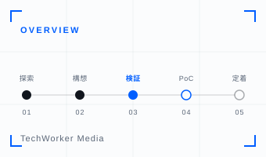
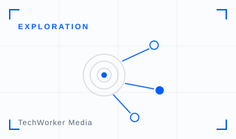
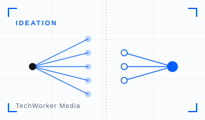
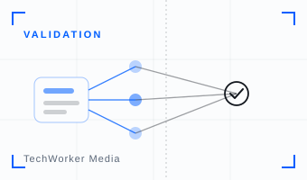
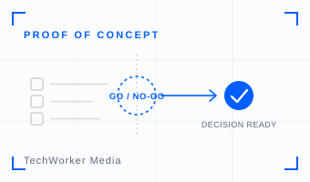
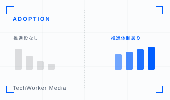

新規事業を、生成AIで前に進める
大企業の新規事業・インキュベーション・R&D・事業開発部門向け。社内データを起点に、探索から構想・検証・PoC・定着まで——生成AIで速く・安く推進する実践知を、上場企業を含む37社・2,500名の支援知見をもとに発信するメディアです。
37社
上場企業含む支援実績
2,500名
生成AI活用支援人数
5フェーズ
探索→構想→検証→PoC→定着
扱うテーマ / 5 Phases
記事一覧

全体像 / Overview
新規事業 × 生成AI｜探索から定着まで速く進める

探索 / Exploration
新規事業の種を社内データ・特許から探す

構想 / Ideation
生成AIでアイディエーション｜発散から収束

検証 / Validation
アイデアを生活者デジタルツインで発売前検証

PoC / Proof of Concept
稟議が通る新規事業PoCの設計

定着 / Adoption
新規事業チームに生成AIを定着させる
このメディアについて
「新規事業AIラボ」は、企業の生成AI導入・活用を支援する株式会社TechWorkerが運営するメディアです。大企業の新規事業・インキュベーション・R&D・事業開発部門が生成AIをどう活用できるかを、上場企業を含む37社・2,500名の支援で得た知見をもとに発信しています。
新規事業への生成AI活用についてのご相談は こちら から承っています。